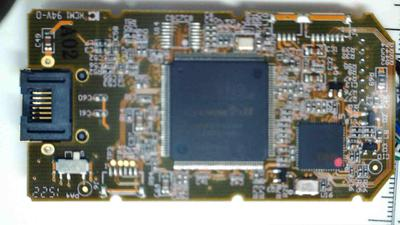
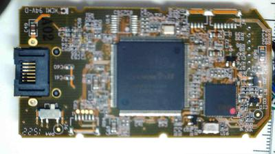

Tearing open a Raritan D2CIM-DVUSB
I got a KX2-416 from a popular auction site on the internet a few days ago plus a cheap (seemingly unused to boot) D2CIM-DVUSB from another seller. The DVUSB arrived well before the 416 and I got curious, so I opened it up to see what makes it tick.
 

{kind=link}
After poking at it a bit, I found a few potentially useful doors into the chips and some circuit paths that look interesting.

The chip on the left is a TI CD4053B (triple 2-channel multiplexer) and the one on the right is a Microchip 24LCS22A (2K VESA E_EDID Serial EEPROM).
| U12 | U13 |
|---|---|
| A Com(14) | SDA(5) |
| B Com(15) | SCL(6) |
| C Com(4) | VCLK(7) |
So, it appears as though something wants to switch the EDID EEPROM between a couple of things.
I traced a couple of connections through to the VGA connector.
| VGA | U12 |
|---|---|
| DDC CLK(15) | By(1) |
| DDC DAT(12) | Ay(13) |
It also appears as though the JTAG pins are brought out to unpopulated headers for both the AT90USB646 and the Altera EP2C5.
I'm waiting on some headers from the next state over to attach with some wirewrap wire to those ports.